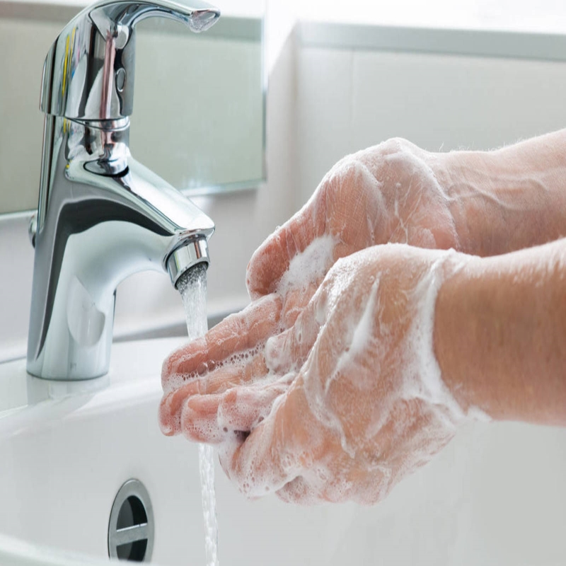
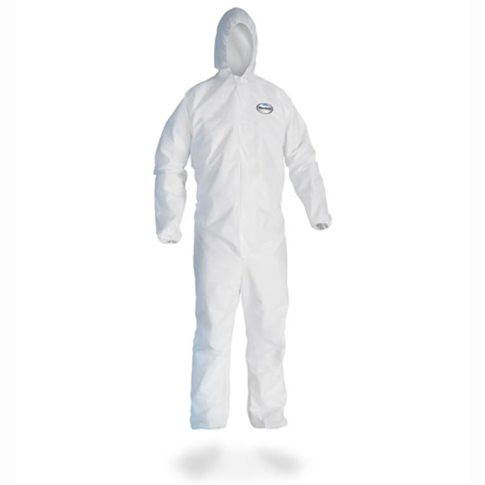
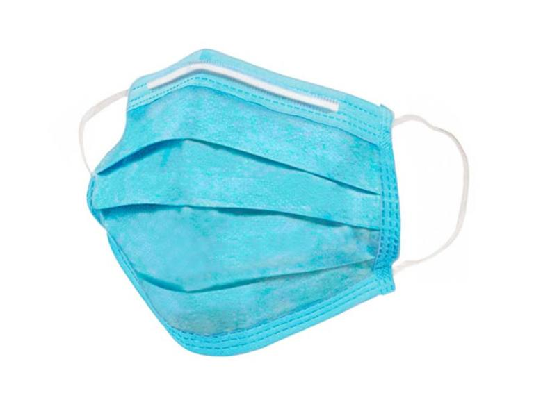
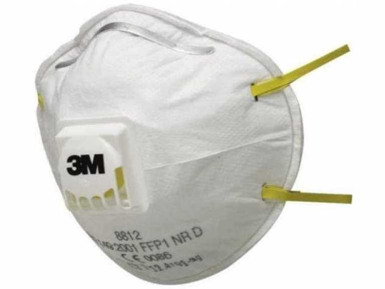
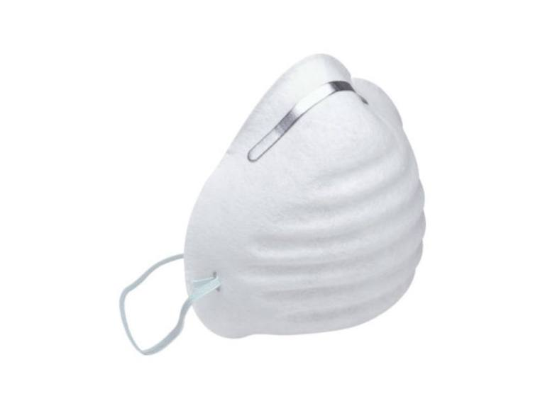

SEPA TODO LO NECESARIO PARA CUIDARSE DE ESTE VIRUS
¿CÓMO PREVENIR EL CONTAGIO DE COVID-19?
CONSEJOS

LIMPIEZA CONSTANTE
Lávate las manos hasta el antebrazo con agua y jabón por un mínimo de 20 segundos.
En caso de no haber agua y jabón, utilizar gel antibacterial.
Cuando llegue de la calle, colocar la ropa en un repositorio e ir directamente a bañarse.
PRUDENCIA
Al toser o estornudar cubrirse la boca con un pañuelo desechable o antebrazo;
nunca con las manos.
No tocarse los ojos,nariz o boca si no se lavó las manos.
Mantener 2 metros de distancia con las demás personas.
Evitar las aglomeraciones de personas y espacios mal ventilados.
Limpiar y desinfectar los objetos con alcohol (No usar en exceso, puede desencadenar intoxicación)

IMPLEMENTOS BÁSICOS
Alcohol antibacterial
Mascarilla
Protector facial
Lente para aislamiento médico
Alcohol Medicinal de 70°
Trajes contra partículas
TIPOS DE MASCARILLAS

MASCARILLAS QUIRÚRJICAS
Son mascarillas de uso médico y cuentan con triple capa, las de dentro y fuera son de poliéster y la capa central
es de polipropilen. Se utilizan con el objetivo de proteger a la persona de posibles agentes infecciosos presentes
en la cavidad nasal o bucal del usuario de la mascarilla.

MASCARILLAS FILTRANTES
Contienen un filtro de micropartículas gracias al cual pueden proteger al usuario de las mascarilla frente a inhalación
de contaminantes ambientales -en partículas o aerosoles-. No protegen frente a gases o vapores.
Se clasifican en 3: FFP1 (fuga hacia el interior máximo del 22%), FPP2 (fuga hacia el interior máximo del 8%), FPP3
(fuga hacia el interior máximo del 2%).

MASCARILLAS HIGIÉNICAS O DE BARRERA
Están destinadas a personas sin síntomas que no sean susceptibles de utilizar mascarillas quirúrgicas ni filtrantes,
en base a las recomendaciones establecidas por el Ministerio de Sanidad y en aquellas situaciones en las que el
desabastecimiento de mascarillas de uso médico las puedan hacer recomendables.